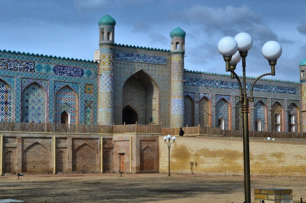
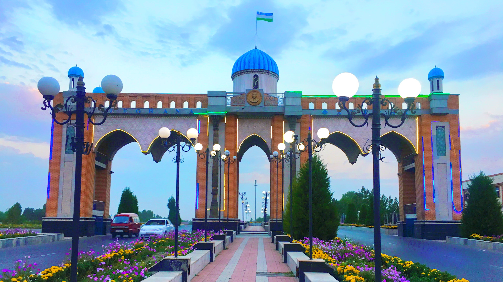

Fergana (Uzbek: Fargʻona/Фарғона, pronounced [farʁɒna]), or Ferghana, is a district-level city and the capital of Fergana Region in eastern Uzbekistan.[2] Fergana is about 420 km east of Tashkent, about 75 km west of Andijan, and less than 20 km from the Kyrgyzstan border.
While the area has been populated for thousands of years, the modern city was founded in 1876.
History
Gubernatorskaya street, Ferghana, 1913
Fergana first appears in written records in the 5th-century. However, archeological evidence demonstrates that the city had been populated since the Chalcolithic period. Like many other Central Asian places in the 6th and 7th-centuries, Fergana was ruled by the Western Turkic Khaganate. Although it was still predominantly inhabited by eastern Iranians, many Turks had also started to settle there.[3] The city of Fergana was refounded in 1876 as a garrison town and colonial appendage to Margelan (22 kilometres or 13+1⁄2 miles to the northwest) by the Russian Empire.[citation needed] It was initially named New Margelan (Новый Маргелан), then renamed Skobelev (Скобелев) in 1907 after the first Russian military governor of Fergana Valley. In 1924, after the Bolshevik reconquest of the region from basmachi rebels, the name was changed to Fergana, after the province of which it was the centre.[4]
The industrial base of Fergana was developed in the 20th century. Industry in the city included textile manufacturing and a nitric fertiliser plant. Some of the industrial development was a result of Evacuation in the Soviet Union during World War II.[5]
Fergana Airport.
Fergana has been a center for oil production in the Fergana Valley since the region's first oil refinery was built near the city in 1908. Since then, more refineries have been added, and Fergana is one of the most important centers of oil refining in Uzbekistan. Natural gas from western Uzbekistan is transported by pipeline to the valley, where it is used to manufacture fertilizer. The Great Fergana Canal, built almost entirely by hand during the 1930s, passes through the northern part of the city and was completed in 1939. During its construction, the canal and the city were widely photographed by the noted photographer Max Penson. With a western loan Fergana is able to modernize its refinery and also reduce air pollution[6] emissions.
Climate
Fergana has a cool arid climate (Köppen BWk). Winters are cold and short, with a daily average low temperature of −2.8 °C (27.0 °F) and a daily average high of 4.6 °C (40.3 °F) in January; summers are hot, with an average low temperature of 20.3 °C (68.5 °F) and an average high of 34.7 °C (94.5 °F) in July. Annual precipitation is less than 200 millimetres or 8 inches, and most of this falls in winter and spring.